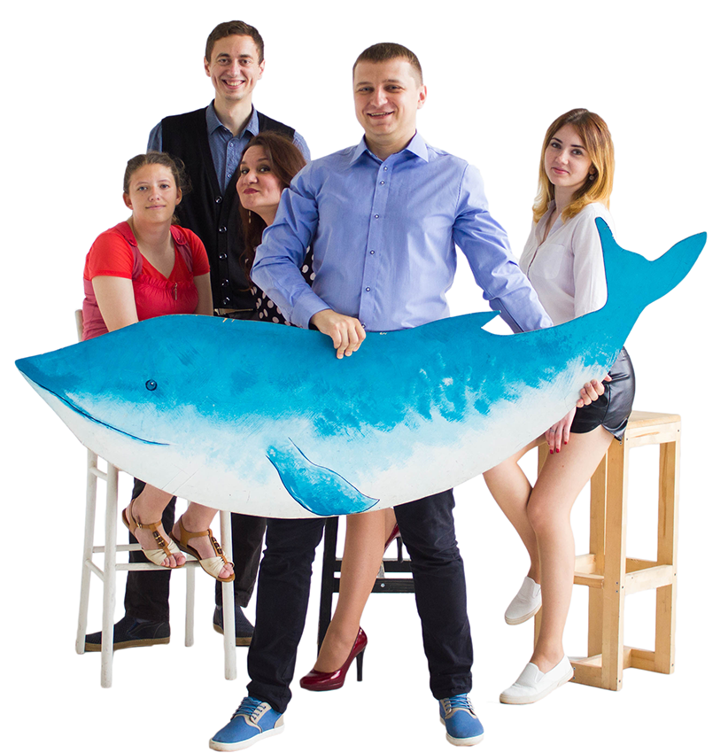

подготовка к ЦТ в Минске
+375 29 618 80 90
+375 33 617 80 90

Хочешь максимально подготовиться к ЦТ?
НЕ ПАНИКУЙ!
Запишись на пробный бесплатный урок!
Талантливые и современные репетиторы объединились вместе и готовы подготовить к ЦТ любого абитуриента. Основная ставка у нас идёт на развитие личности выпускников школ при строгом контроле знаний. Мы заметили, что на курсах с отсутствием контроля знаний - результаты учеников намного меньше.
Поэтому решили совместить интересную подачу материала с постоянным мониторингом результатов наших учеников. При должном выполнении программы обучения - результаты у абитуриентов от 80 баллов гарантированы. Однако, процесс образования взаимен! Поэтому мы не обещаем золотых гор. Придётся поработать вместе!
Предметы, по которым мы готовим к ЦТ
| Биология | История Беларуси | Физика | ||||
| Французский | Математика | Химия | География | |||
| Белорусский | Обществоведение | Английский | ||||
| Немецкий | Русский |
Команда "Фабрики знаний"
это мы организовываем обучение
Сми о нас
Беларусь-2. Александр Луцевич: "Что выбрать - факультативы, репетиторов или курсы подготовки к ЦТ?"
Беларусь-2. Александр Луцевич: "В защиту абитуриентов"
Эфир Еврорадио. Александр Луцевич: "Об итогах 2016-2017 учебного года"
Эфир Еврорадио. Александр Луцевич: "Об итогах вступительной компании 2017 года"
Как стать нашим учеником
| 02 | |
| 03 |